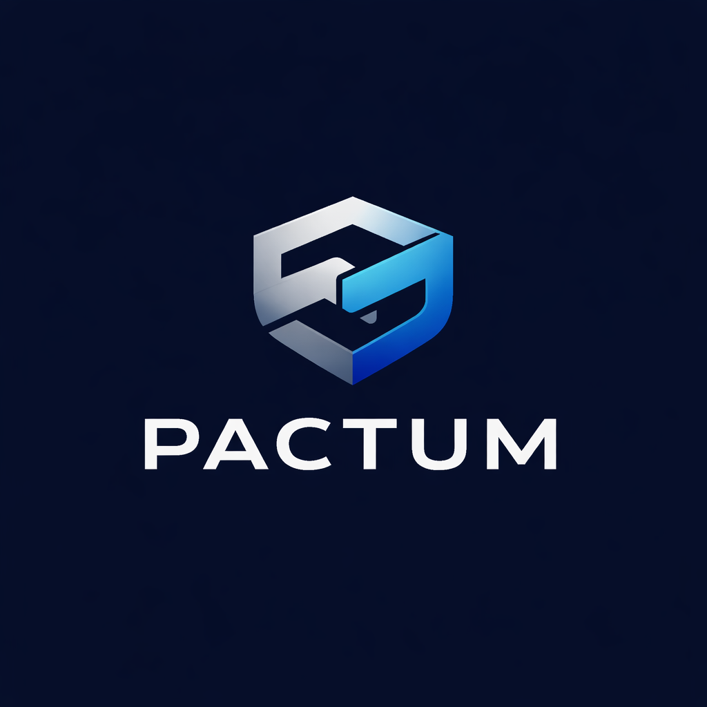

Property and home solutions
The existing portfolio describes an Airbnb-style home rental approach built for local realities — PKR payments, EasyPaisa and northern Pakistan tourism.
Muhammad Ayan Khan / Startups
Building practical businesses for Pakistan — from property and home solutions to trust in digital payments.
I have built two startups: Kor Da and Pactum. Both focus on local needs — managing properties in Islamabad, and the need for trust between buyers and sellers in Pakistan's digital economy.
Each venture has its own page with a closer look at the problem, the approach, my role and what comes next.

PropertyPakistan
A Pakistan-focused property and home solutions startup, built from real experience managing Airbnb properties in Islamabad.

EscrowFintech
A trust-based escrow service designed to secure transactions and protect both buyers and sellers.
I am also the founder of Havelian Kings, a club cricket initiative in Pakistan — see Experience.
I am listed as the founder of both Kor Da and Pactum. In practical terms my work has covered identifying the problem, shaping the product idea, building the web presence and presenting the ventures publicly.
[PLACEHOLDER — Add your exact official titles and day-to-day responsibilities for each venture.]The existing portfolio describes an Airbnb-style home rental approach built for local realities — PKR payments, EasyPaisa and northern Pakistan tourism.
Pactum is described as a trust-based escrow service designed to protect buyers and sellers, with the aim of making digital transactions more transparent.
Building in Pakistan means working with local payment habits, trust gaps and market realities — the same conditions that shaped these two ideas.
[PLACEHOLDER — Describe specific challenges and lessons learned. No figures have been supplied.]Both ventures have live public websites and company LinkedIn pages, linked from the dedicated pages.
[PLACEHOLDER — List only verified milestones with dates or evidence. Do not add traction, funding or customer numbers unless confirmed.]The portfolio presents both startups as active while I continue my BBIT studies. Specific future plans have not been published yet.
[PLACEHOLDER — Add specific, confirmed plans for each venture.]